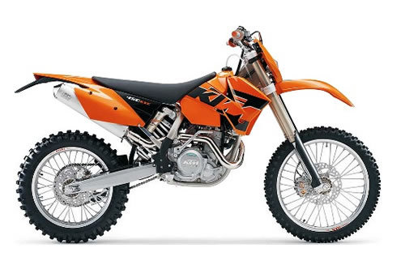

| KTM race bike service manual repair 2000-2005 | |
 |
Instant download of the factory repair manual for 2000-2005 KTM four-stroke race bikes. This includes the owner's manual, motor repair manual, rear shock rebuild manual, and front fork rebuild manual. 410 pages. |
 |
| KTM 250 service manual repair 2005-2010 EXC SX SXS XC XCF | |
| Instant download of the factory repair manual for 2005-2010 KTM 250 four-stroke bikes. This includes the 2009-2010 owner manuals, 2005-2010 engine manual, 2005-2010 rear shock manual, and 2005-2010 front fork manual. 772 pages. | |
|